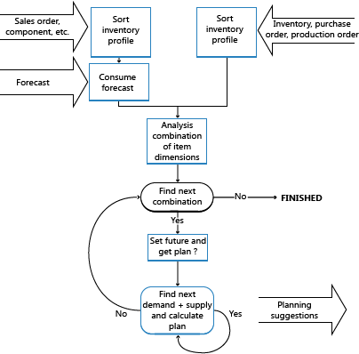

Design Details: Balancing Demand and Supply
To understand how the planning system works, it is necessary to understand the prioritized goals of the planning system, the most important of which are to ensure that:
- Any demand will be met by sufficient supply.
- Any supply serves a purpose.
Generally, these goals are achieved by balancing supply with demand.
Demand and Supply
Demand is the common term used for any kind of gross demand, such as a sales order and component need from a production order. In addition, application allows more technical types of demand, such as negative inventory and purchase returns.
Supply is the common term used for any kind of positive or inbound quantity, such as inventory, purchases, assembly, production, or inbound transfers. In addition, a sales return may also represent supply.
To sort out the many sources of demand and supply, the planning system organizes them on two time lines called inventory profiles. One profile holds demand events, and the other holds the corresponding supply events. Each event represents one order network entity, such as a sales order line, an item ledger entry, or a production order line.
When inventory profiles are loaded, the different demand-supply sets are balanced to output a supply plan that fulfills the listed goals.
Planning parameters and inventory levels are other types of demand and supply respectively, which undergo integrated balancing to replenish stock items. For more information, see Design Details: Handling Reordering Policies.
The Concept of Balancing in Brief
Demand is given by a company's customers. Supply is what the company can create and remove to establish balance. The planning system starts with the independent demand and then tracks backwards to the supply.
The inventory profiles are used to contain information about the demands and supplies, quantities, and timing. These profiles essentially make up the two sides of the balancing scale.
The objective of the planning mechanism is to counterbalance the demand and supply of an item to ensure that supply will match demand in a feasible way as defined by the planning parameters and rules.

Dealing with Orders Before the Planning Starting Date
To avoid that a supply plan shows impossible and therefore useless suggestions, the planning system regards the period up until the planning starting date a frozen zone where nothing is planned for. The following rule applies to the frozen zone:
All supply and demand before the starting date of the planning period will be considered a part of inventory or shipped.
Accordingly, the planning system will not, with a few exceptions, suggest any changes to supply orders in the frozen zone, and no order tracking links are created or maintained for that period.
The exceptions to this rule are as follows:
- If the projected available inventory, including the sum of supply and demand in the frozen zone, is below zero.
- If serial/lot numbers are required on the backdated order(s).
- If the supply-demand set is linked by an order-to-order policy.
If the initial available inventory is below zero, the planning system suggests an emergency supply order on the day before the planning period to cover the missing quantity. Consequently, the projected and available inventory will always be at least zero when planning for the future period begins. The planning line for this supply order will display an Emergency warning icon and additional information is provided upon lookup.
Serial/Lot Numbers and Order-to-Order Links are Exempt from the Frozen Zone
If serial/lot numbers are required or an order-to-order link exists, the planning system will disregard the frozen zone and incorporate such quantities that are back-dated from the starting date and potentially suggest corrective actions if demand and supply is not synchronized. The business reason for this principle is that such specific demand-supply sets must match to ensure that this specific demand is fulfilled.
Loading the Inventory Profiles
To sort out the many sources of demand and supply, the planning system organizes them on two timelines called inventory profiles.
The normal types of demand and supply with due dates on or after the planning starting date are loaded into each inventory profile. When loaded, the different demand and supply types are sorted according to overall priorities, such as due date, low-level codes, location, and variant. In addition, order priorities are applied to the different types to ensure that the most important demand is fulfilled first. For more information, see Prioritizing Orders.
As previously mentioned, demand could also be negative. This means that it should be treated as supply; however, unlike the normal types of supply, negative demand is considered fixed supply. The planning system can take it into account, but will not suggest any changes to it.
In general, the planning system considers all supply orders after the planning starting date as subject to change in order to fulfill demand. However, as soon as a quantity is posted from a supply order, it can no longer be changed by the planning system. Accordingly, the following different orders cannot be replanned:
- Released production orders where consumption or output has been posted.
- Assembly orders where consumption or output has been posted.
- Transfer orders where shipment has been posted.
- Purchase orders where receipt has been posted.
Apart from loading demand and supply types, certain types are loaded with attention to special rules and dependencies that are described in the following.
Item Dimensions are Separated
The supply plan must be calculated per combination of the item dimensions, such as variant and location. However, there is no reason to calculate any theoretical combination. Only those combinations that carry a demand and/or supply need to be calculated.
The planning system controls this by running through the inventory profile. When a new combination is found, application creates an internal control record that holds the actual combination information. The application inserts the SKU as the control record, or outer loop. As a result, the proper planning parameters according to a combination of variant and location are set, and application can proceed to the inner loop.
Note
The application does not require the user to enter a SKU record when entering demand and/or supply for a particular combination of variant and location. Therefore, if a SKU does not exist for a given combination, application creates its own temporary SKU record based on the item card data. If Location Mandatory is set to Yes in the Inventory Setup page, then either a SKU must be created or Components at Location must be set to Yes. For more information, see Design Details: Demand at Blank Location.
Serial/Lot Numbers are Loaded by Specification Level
Attributes in the form of serial/lot numbers are loaded into the inventory profiles along with the demand and supply that they are assigned to.
Demand and supply attributes are arranged by order priority as well as by their level of specification. Because serial/lot number matches reflect the level of specification, the more specific demand, such as a lot number selected specifically for a sale line, will seek a match before less specific demand, such as a sale from any lot number selected.
Note
There are no dedicated prioritization rules for serial/lot-numbered demand and supply, other than the level of specification defined by their combinations of serial and lot numbers and the item tracking setup of the involved items.
During balancing, the planning system regards supply that carries serial/lot numbers as inflexible and will not try to increase or reschedule such supply orders (unless they are used in an order-to-order relation). See Order-to-Order Links are Never Broken). This protects the supply from receiving several, possibly conflicting, action messages when a supply carries varying attributes—such as a collection of different serial numbers.
Another reason that serial/lot numbered supply is inflexible is that serial/lot numbers are generally assigned so late in the process that it would be confusing if changes are suggested.
The balancing of serial/lot numbers does not respect the frozen zone. If demand and supply is not synchronized, the planning system will suggest changes or suggest new orders, regardless of the planning starting date.
Order-to-Order Links are Never Broken
When planning an order-to-order item, the linked supply must not be used for any demand other than what it was originally intended for. The linked demand should not be covered by any other random supply, even if, in its present situation, it is available in time and quantity. For example, an assembly order that is linked to a sales order in an assemble-to-order scenario cannot be used to cover other demand.
Order-to-order demand and supply must balance precisely. The planning system will ensure the supply under all circumstances without regarding order sizing parameters, modifiers, and quantities in inventory (other than quantities relating to the linked orders). For the same reason, the system will suggest decreasing excess supplies if the linked demand is decreased.
This balancing also affects the timing. The limited horizon that is given by the time bucket is not regarded; the supply will be rescheduled if the timing of the demand has changed. However, dampener time will be respected and will prevent order-to-order supplies from being scheduled out, except for the internal supplies of a multi-level production order (project order).
Note
Serial/lot numbers can also be specified on order-to-order demand. In that case, the supply is not regarded inflexible by default, as is normally the case for serial/lot numbers. In this case, the system will increase/decrease according to changes in demand. Furthermore, if one demand carries varying serial/lot numbers, such as more than one lot number, one supply order will be suggested per lot.
Note
Forecasts should not lead to creating supply orders that are bound by an order-to-order link. If the forecast is used, it should only be used as a generator of dependent demand in a manufacturing environment.
Component Need is Loaded according to Production Order Changes
When handling production orders, the planning system must monitor the needed components before loading them into the demand profile. Component lines that result from an amended production order will replace those of the original order. This ensures that the planning system establishes that planning lines for component need are never duplicated.
Safety Stock May Be Consumed
The safety stock quantity is primarily a demand type and is therefore loaded into the inventory profile on the planning starting date.
Safety stock is an inventory quantity set aside to compensate for uncertainties in demand during the replenishment lead time. However, it may be consumed if it is necessary to take from it to fulfill a demand. In that case, the planning system will ensure that the safety stock is quickly replaced by suggesting a supply order to replenish the safety stock quantity on the date it is consumed. This planning line will display an Exception warning icon explaining to the planner that the safety stock has been partly or fully consumed by means of an exception order for the missing quantity.
Forecast Demand is Reduced by Sales Orders
The demand forecast expresses anticipated future demand. While actual demand is entered, typically as sales orders for produced items, it consumes the forecast.
The forecast itself is not actually reduced by sales orders; it remains the same. However, the forecast quantities used in the planning calculation are reduced (by the sales order quantities) before the remaining quantity, if any, enters the demand inventory profile. When the planning system examines actual sales during a period, both open sales orders and item ledger entries from shipped sales are included, unless they are derived from a blanket order.
A user is required to define a valid forecast period. The date on the forecasted quantity defines the start of the period, and the date on the next forecast defines the end of the period.
The forecast for periods prior to the planning period is not used, regardless of whether it was consumed or not. The first forecast figure of interest is either the date on or the closest date prior to the planning starting date.
The forecast can be for independent demand, such as sales orders, or dependent demand, like production order components (module-forecast). An item can have both types of forecast. During planning, the consumption takes place separately, first for independent demand and then for dependent demand.
Blanket Order Demand is Reduced by Sales Orders
Forecasting is supplemented by the blanket sales order as a means of specifying future demand from a specific customer. As with the (unspecified) forecast, actual sales should consume the anticipated demand, and the remaining quantity should enter the demand inventory profile. Again, the consumption does not actually reduce the blanket order.
The planning calculation considers open sales orders linked to the specific blanket order line, but it does not consider any valid time period. Nor does it consider posted orders, since the posting procedure has already reduced the outstanding blanket order quantity.
Prioritizing Orders
Within a given SKU, the requested or available date represents the highest priority; the demand of today should be dealt with before the demand of next week. But in addition to this overall priority, the planning system will also suggest which type of demand should be fulfilled before fulfilling another demand. Likewise, it will suggest what source of supply should be applied before applying other sources of supply. This is done according to order priorities.
Loaded demand and supply contribute to a profile for the projected inventory according to the following priorities:
Priorities on the Demand Side
- Already shipped: Item Ledger Entry
- Purchase Return Order
- Sales Order
- Service Order
- Production Component Need
- Assembly Order Line
- Outbound Transfer Order
- Blanket Order (that has not already been consumed by related sales orders)
- Forecast (that has not already been consumed by other sales orders)
Note
Purchase returns are usually not involved in supply planning; they should always be reserved from the lot that is going to be returned. If not reserved, purchase returns play a role in the availability and are highly prioritized to avoid that the planning system suggests a supply order just to serve a purchase return.
Priorities on the Supply Side
- Already in inventory: Item Ledger Entry (Planning Flexibility = None)
- Sales Return Order (Planning Flexibility = None)
- Inbound Transfer Order
- Production Order
- Assembly Order
- Purchase Order
Priority Related to the State of Demand and Supply
Apart from priorities given by the type of demand and supply, the present state of the orders in the execution process also defines a priority. For example, warehouse activities have an impact, and the status of sales, purchase, transfer, assembly, and production orders is taken into account:
- Partly handled (Planning Flexibility = None)
- Already in process in the warehouse (Planning Flexibility = None)
- Released – all order types (Planning Flexibility = Unlimited)
- Firm Planned Production Order (Planning Flexibility = Unlimited)
- Planned/Open – all order types (Planning Flexibility = Unlimited)
Balancing Supply with Demand
The core of the planning system involves balancing demand and supply by means of suggesting user actions to revise the supply orders in case of imbalance. This takes place per combination of variant and location.
Imagine that each inventory profile contains a string of demand events (sorted by date and priority) and a corresponding string of supply events. Each event refers back to its source type and identification. The rules for counterbalancing the item are straightforward. Four instances of matching demand and supply can occur at any point of time in the process:
No demand or supply exists for the item => the planning has finished (or should not start).
Demand exists but there is no supply => supply should be suggested.
Supply exists but there is no demand for it => supply should be canceled.
Both demand and supply exist => questions should be asked and answered before the system can ensure that demand will be met and supply is sufficient.
If the timing of the supply is not suitable, perhaps the supply can be rescheduled as follows:
- If the supply is placed earlier than the demand, perhaps the supply can be rescheduled out so that inventory is as low as possible.
- If the supply is placed later than the demand, perhaps the supply can be rescheduled in. Otherwise, the system will suggest new supply.
- If the supply meets the demand on the date, the planning system can proceed to investigate whether the quantity of the supply can cover the demand.
Once the timing is in place, the adequate quantity to be supplied can be calculated as follows:
- If the supply quantity is less than the demand, it is possible that the supply quantity could be increased (or not, if limited by a maximum quantity policy).
- If the supply quantity is greater than the demand, it is possible that the supply quantity can be decreased (or not, if limited by a minimum quantity policy).
At this point, either of these two situations exists:
- The current demand can be covered, in which case it can be closed and planning for the next demand can start.
- The supply has reached its maximum, leaving some of the demand quantity uncovered. In this case, the planning system can close the current supply and proceed to the next one.
The procedure starts all over with the next demand and the current supply or vice versa. The current supply might be able to cover this next demand as well, or the current demand has not yet been fully covered.
Rules Concerning Actions for Supply Events
When the planning system performs a top-down calculation in which supply must fulfill demand, the demand is taken as a given, that is, it lies outside the control of the planning system. However, the supply side can be managed. Therefore, the planning system will suggest creating new supply orders, rescheduling existing ones, and/or changing the order quantity. If an existing supply order becoming superfluous, the planning system will suggest that the user cancels it.
If the user wants to exclude an existing supply order from the planning suggestions, he can state that it has no planning flexibility (Planning Flexibility = None). Then, excess supply from that order will be used to cover demand, but no action will be suggested.
In general, all supply has a planning flexibility that is limited by the conditions of each of the suggested actions.
Reschedule Out: The date of an existing supply order can be scheduled out to meet the demand due date unless:
- It represents inventory (always on day zero).
- It has an order-to-order linked to another demand.
- It lies outside the reschedule page defined by the time bucket.
- There is a closer supply that could be used.
- On the other hand, the user may decide not to reschedule because:
- The supply order has already been tied to another demand on a previous date.
- The needed rescheduling is so minimal that the user finds it negligible.
Reschedule In: The date of an existing supply order can be scheduled in, except in the following conditions:
- It is linked directly to some other demand.
- It lies outside the reschedule page defined by the time bucket.
Note
When planning an item using a reorder point, the supply order can always be scheduled in if necessary. This is common in forward-scheduled supply orders triggered by a reorder point.
- Increase Quantity: The quantity of an existing supply order can be increased to meet the demand unless the supply order is linked directly to a demand by an order-to-order link.
Note
Even though it is possible to increase the supply order, it may be limited due to a defined maximum order quantity.
- Decrease Quantity: An existing supply order with a surplus compared to an existing demand can be decreased to meet the demand.
Note
Even though the quantity could be decreased, there may still be some surplus compared to the demand due to a defined minimum order quantity or order multiple.
- Cancel: As a special incident of the decrease quantity action, the supply order could be canceled if it has been decreased to zero.
- New: If no supply order already exists, or an existing one cannot be changed to meet the necessary quantity on the demanded due date, a new supply order is suggested.
Determining the Supply Quantity
Planning parameters defined by the user control the suggested quantity of each supply order.
When the planning system calculates the quantity of a new supply order or the quantity change on an existing one, the suggested quantity may be different from what is actually demanded.
If a maximum inventory or fixed order quantity are selected, the suggested quantity may be increased to meet that fixed quantity or the maximum inventory. If a reordering policy uses a reorder point, the quantity may be increased at least to meet the reorder point.
The suggested quantity may be modified in this sequence:
- Down to the maximum order quantity (if any).
- Up to the minimum order quantity.
- Up to meet the nearest order multiple. (In case of erroneous settings, this may violate the maximum order quantity.)
Order Tracking Links during Planning
Concerning order tracking during planning, it is important to mention that the planning system rearranges the dynamically created order tracking links for the item/variant/location combinations.
There are two reasons for this:
- The planning system must be able to justify its suggestions; that all demand has been covered, and that no supply orders are superfluous.
- Dynamically created order tracking links need to be rebalanced regularly.
Over time, dynamic order tracking links become out of balance since the entire order tracking network is not rearranged until a demand or supply event is actually closed.
Before balancing supply by demand, application deletes all existing order tracking links. Then during the balancing procedure, when a demand or supply event is closed, it establishes new order tracking links between the demand and supply.
Note
Even if the item is not set up for dynamic order tracking, the planned system will create balanced order tracking links as explained above.
Closing Demand and Supply
When the supply balancing procedures have been performed, there are three possible end situations:
- The required quantity and date of the demand events have been met and the planning for them can be closed. The supply event is still open and may be able to cover the next demand, so the balancing procedure can start over with the current supply event and the next demand.
- The supply order cannot be modified to cover all of the demand. The demand event is still open, with some uncovered quantity that may be covered by the next supply event. Thus the current supply event is closed, so the balancing act can start over with the current demand and the next supply event.
- All of the demand has been covered; there is no subsequent demand (or there has been no demand at all). If there is any surplus supply, it may be decreased (or canceled) and then closed. It is possible that additional supply events exist further along in the chain, and they should also be canceled.
Last, the planning system will create an order tracking link between the supply and the demand.
Creating the Planning Line (Suggested Action)
If any action – New, Change Quantity, Reschedule, Reschedule and Change Quantity, or Cancel – is suggested to revise the supply order, the planning system creates a planning line in the planning worksheet. Due to order tracking, the planning line is created not only when the supply event is closed, but also if the demand event is closed, even though the supply event is still open and may be subject to additional changes when the next demand event is processed. This means that when first created, the planning line may be changed again.
To minimize database access when handling production orders, the planning line can be maintained in three levels, while aiming to perform the least demanding maintenance level:
- Create only the planning line with the current due date and quantity but without the routing and components.
- Include routing: the planned routing is laid out including calculation of starting and ending dates and times. This is demanding in terms of database accesses. To determine the ending and due dates, it may be necessary to calculate this even if the supply event has not been closed (in the case of forward scheduling).
- Include BOM explosion: this can wait until just before the supply event is closed.
This concludes the descriptions of how demand and supply is loaded, prioritized, and balanced by the planning system. In integration with this supply planning activity, the system must ensure that the required inventory level of each planned item is maintained according to its reordering policies.
See Also
Design Details: Central Concepts of the Planning System
Design Details: Handling Reordering Policies
Design Details: Supply Planning